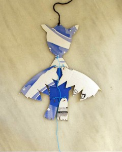

Una construcción fácil y estable de cartón.
Los agujeros tienen que ser grandes para que los brazos o alas y piernas se quedan sueltos, si no vuelven a bajar solos.
Noah queria hacer un dragón de oro.
A simple and stable construction of cardboard.The holes need to be large so that the arms and legs or wings are loose, if not they don´t go back down by themselves.
Noah wanted to do a golden dragon.
Eine einfache und stabile Konstruktion aus Pappe.
Die Löcher müssen groß sein, so dass die Arme und Beine oder Flügel lose sind, wenn nicht, gehen sie nicht von alleine nach unten.
Noah wollte einen goldenen Drachen machen.